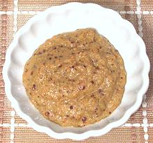

 |
German Spicy MustardGermany | ||||
| Makes: Effort: Sched: DoAhead: |
2 cup ** 4 days Must |
Tired of the absurd prices charged for tiny jars of German mustard? Make your own - without sacrificing flavor. It's easy, but does take a few days to fully mature. This recipe makes just shy of 2 cups at about US $1.00/cup. | |||
|
|
1/4 2 1/4 ------- 4 2 1/2 1/2 1/2 1-1/2 1/2 2 1 1/8 |
c T c --- oz cl T t t c c T t t |
Mustard Seed, yellow Mustard Seed, black Mustard powder (1) -- Seasonings Onion Garlic Tarragon, fresh (2) Cinnamon Allspice Cider Vinegar Water Sugar, brown Salt Turmeric |
Make: - (4 days - 45 min work)
|